Sol terem
A Nap istennője az északi mitológiában
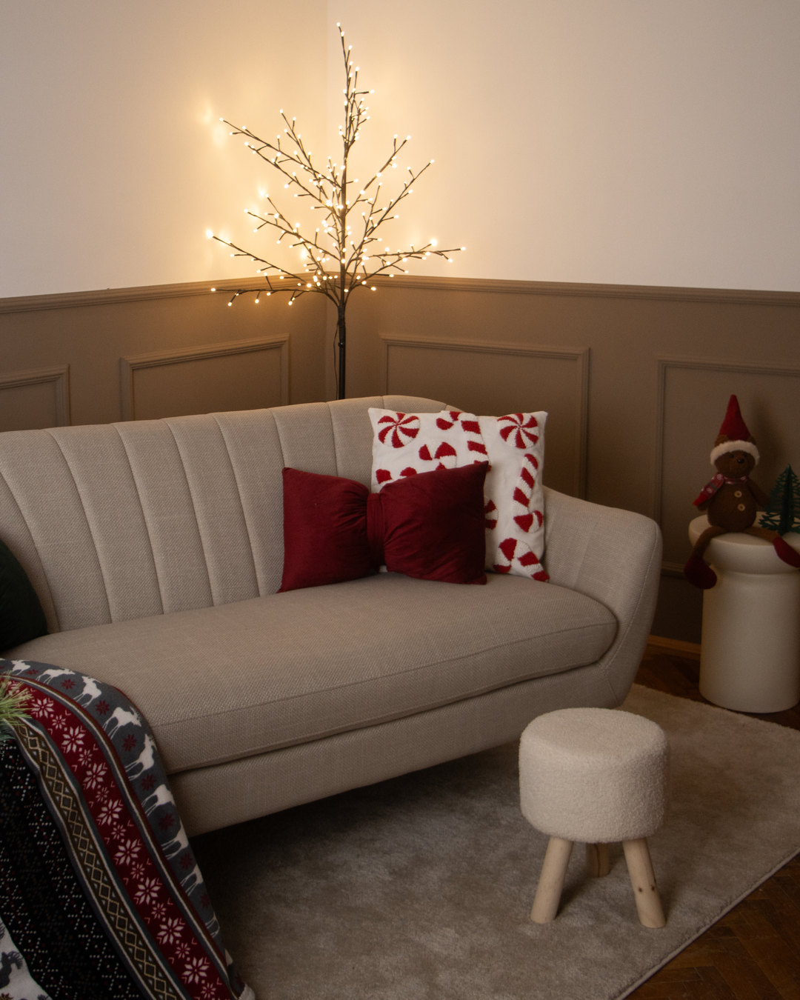
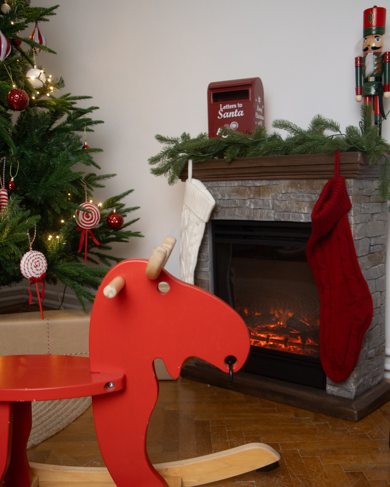
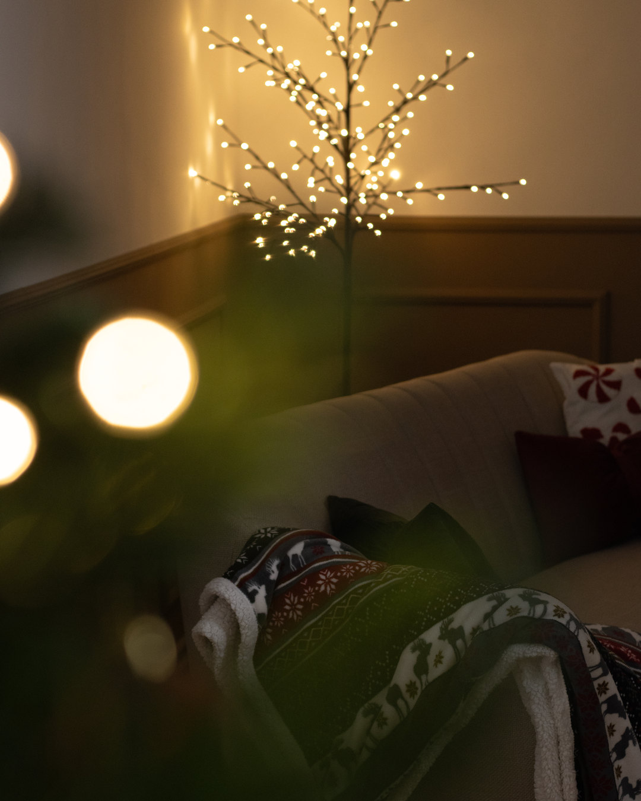
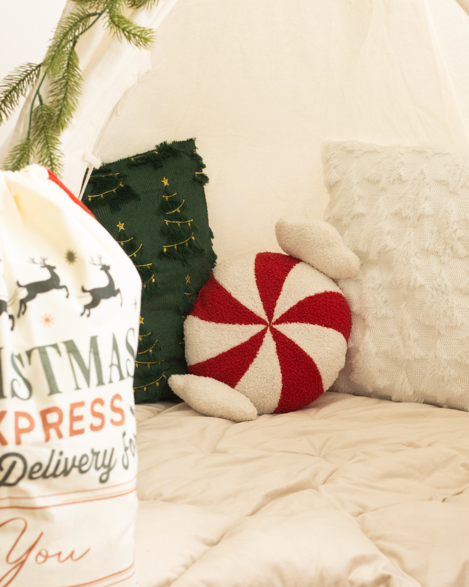
Berendezett fotóstúdió Veszprém belvárosában
A termeket egyszerre használhatod, nem kell őket külön foglalni. A stúdió önállóan is bérelhető, de stúdiófotózást is foglalhatsz Zakariás Fannival.
Jelenleg a karácsonyi enteriőr érhető el. Sol és Mani ünnepi díszben vár, a papírhátteres Saga változatlan.
A Nap istennője az északi mitológiában




A Hold istene, Sol testvére
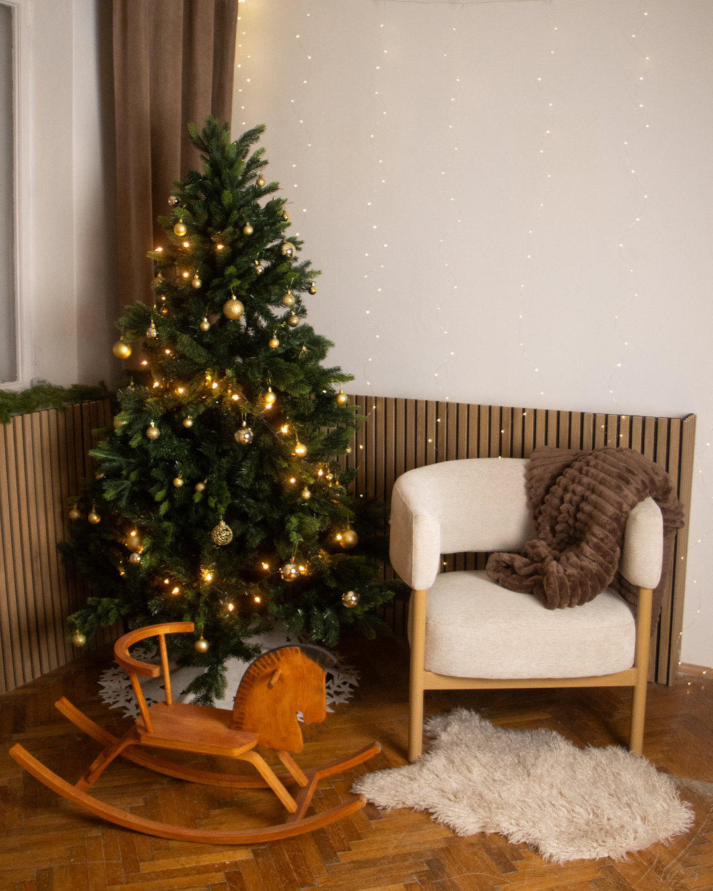
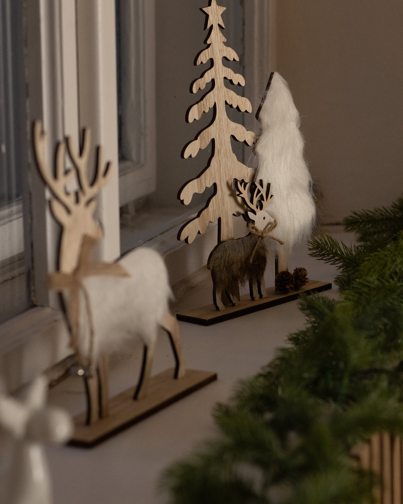
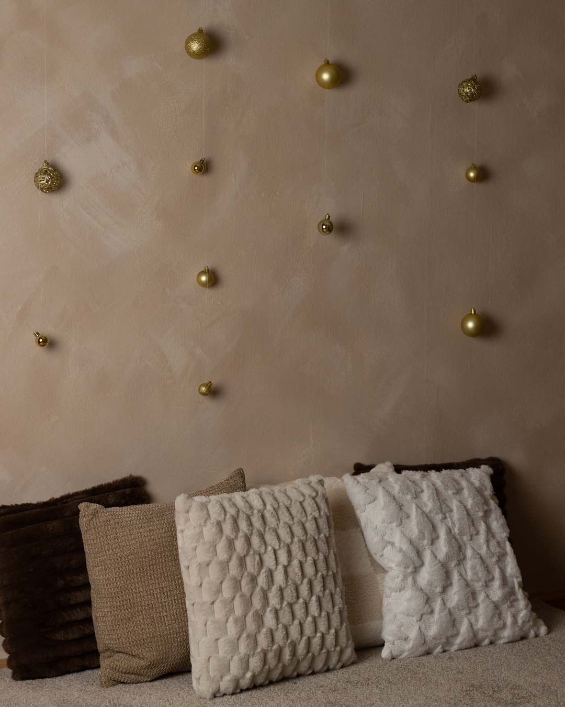
A történetek és az emlékezés istennője
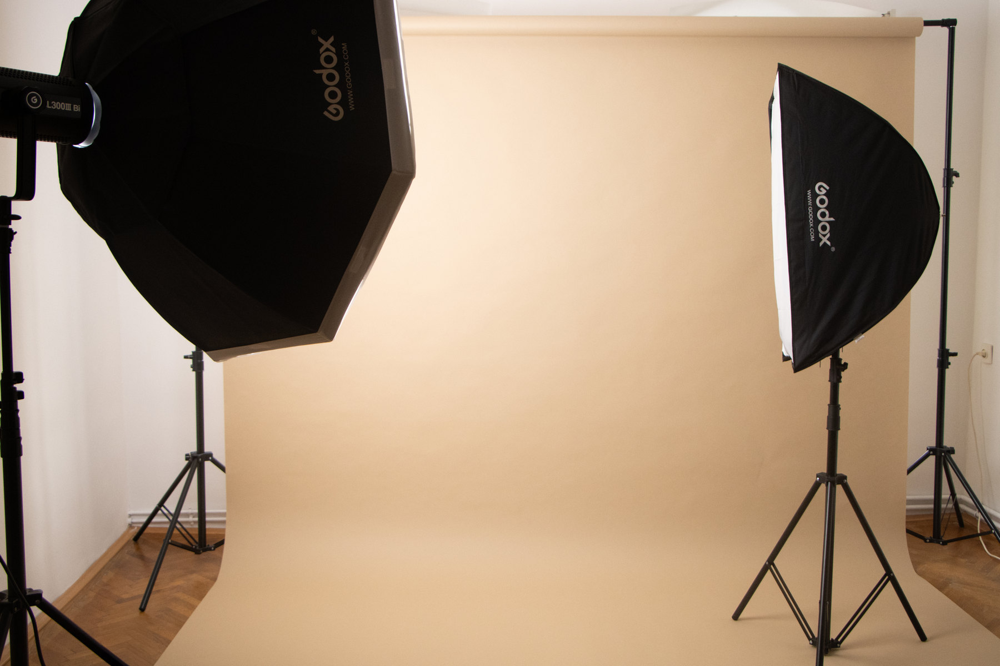
2,72 m széles
1,35 m széles
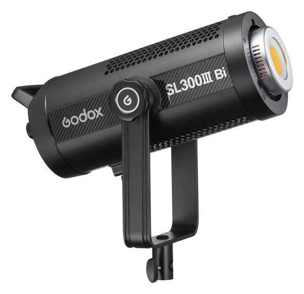
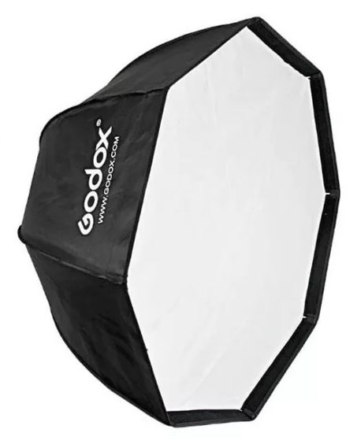
Bi-color LED lámpa, 120 cm-es oktoboxszal
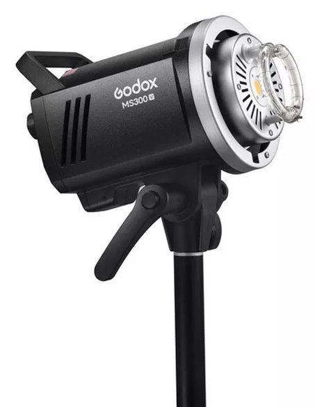
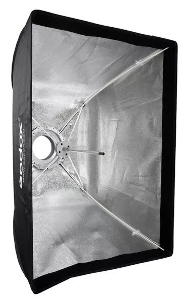
Stúdióvaku, 60×90 cm-es softboxszal
Vakukioldó Canon géphez
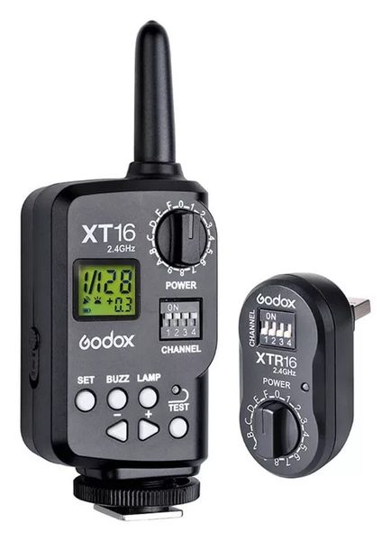
Rádiós vakukioldó
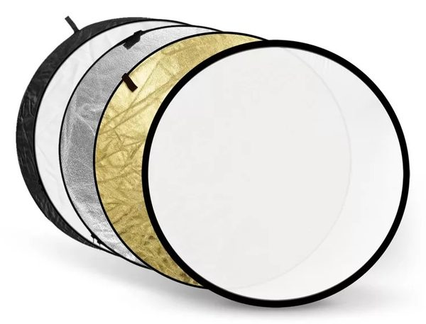
5 az 1-ben derítőlap, 110 cm
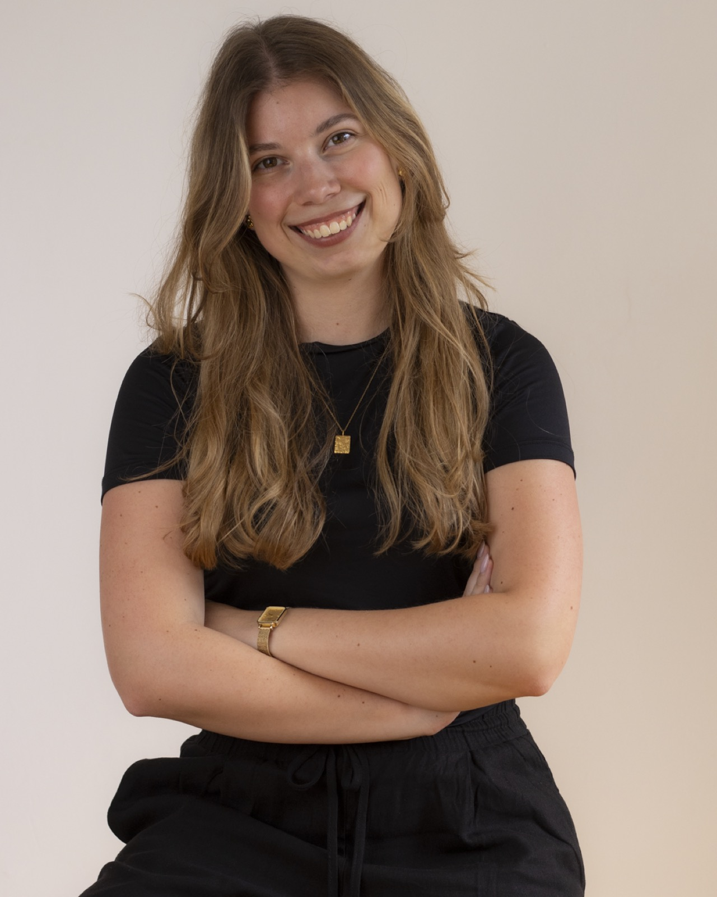
Zakariás Fanni
„A legtöbben csak egy jó képet szeretnének. Én ebben segítek."
Veszprémi fotós vagyok, portré- és brand fotózással foglalkozom. Ha még sosem fotózkodtál stúdióban, ne izgulj – együtt kitaláljuk, mi illik hozzád. A végén olyan képeid lesznek, amiket tényleg szívesen megmutatsz.
Portfólió
Csomagok
30 perces fotózás · 10 retusált kép
60 perces fotózás · 20 retusált kép
90 perces fotózás · 30 retusált kép
Minden csomag tartalmazza a stúdió használatát, nincs külön stúdióbérlési díj. Extra retusált képek 1 000 Ft/db áron rendelhetők.
Amennyiben kültéri fotózást szeretnél Fannival, vedd fel vele a kapcsolatot a fanni.zakarias@gmail.com email címen.
Stúdiófotózást foglalokAjándékozz egy különleges pillanatot
Lepd meg szeretteidet egy stúdiófotózással, a fotós Zakariás Fanni lesz.
Céges vagy egyedi projekthez egyedi ajánlatot adunk – kérlek, ilyenkor keress meg minket külön: info@studiofreya.hu · +36 30 306 6297
2026. október 19-től karácsonyi díszlet van a stúdióban: a Sol teremben klasszikus piros-zöld, a Mani teremben elegáns arany díszítés, fenyőfával, meleg fényekkel, hintalóval – ideális családi, gyerek- és páros fotózásokhoz. A papírhátteres Saga terem változatlan. Ha nem karácsonyi környezetben szeretnél fotózni vagy fotózkodni, a foglalás előtt keress minket az info@studiofreya.hu címen vagy a +36 30 306 6297 számon, és megbeszéljük a lehetőségeket.
A foglalási felületen válaszd ki, hogy csak a stúdiót szeretnéd bérelni, vagy fotózást kérsz Zakariás Fannitól, majd jelölj ki egy szabad időpontot a naptárban. A foglalás akkor válik érvényessé, amikor megkapod a visszaigazoló e-mailt – ezt 1 munkanapon belül elküldjük.
A foglalási felületen válaszd az Ajándékutalványt, jelöld ki Fanni egyik csomagját, és add meg, kitöltve vagy üresen kéred-e. Az árát előre, átutalással kell kifizetni; a befizetés után 1 munkanapon belül PDF-ben küldjük az utalványt. Az utalvány a vásárlástól számított 6 hónapig váltható be: a megajándékozott a szokásos módon foglal stúdiófotózást, fizetési módnak az Ajándékutalványt választja, és megadja a kódját.
Az első óra 10 000 Ft, minden további megkezdett óra 8 000 Ft. Az ár a teljes felszerelés használatát is tartalmazza: világítás, hátterek, berendezett enteriőr. Fizetni a foglalás napján lehet, készpénzben a helyszínen vagy banki átutalással.
Stúdióbérlésnél önállóan használod a teret: saját fényképezőgéppel vagy a saját fotósoddal érkezel. Stúdiófotózásnál Zakariás Fanni lesz a fotósod, és a csomag ára a stúdió használatát is tartalmazza, így külön bérleti díjat nem kell fizetned.
Igen. Az időpont előtt legalább 48 órával díjmentesen lemondhatod vagy módosíthatod, ha írsz nekünk az info@studiofreya.hu címre. Ha 48 órán belül mondod le, a díj 50%-át, ha nem jelensz meg, a teljes díjat felszámíthatjuk.
A fotózás után Fanni előválogatja a képeket, és a nyers felvételeket online galériában (Pixieset) megosztja veled. Ebből a megosztástól számított 7 napon belül kiválasztod a csomagodnak megfelelő számú képet. A retusált képeket a választásodat követő 14 munkanapon belül kapod meg, szintén online galériában. Extra retusált képet 1000 Ft/db áron rendelhetsz.
Igen, a ruhákat és a személyes kellékeket neked kell hoznod. Ha szeretnéd, előre átbeszéljük, mi illik leginkább a fotózáshoz.
Kérünk, hozz váltócipőt: utcai cipőben nem lehet belépni a stúdióba. Stúdióbérlésnél 5–10 perccel a kezdés előtt érkezz. Minden foglalás utolsó 10 percében rendbe kell tenned a stúdiót (egy 2 órás bérlésből tehát 1 óra 50 perc a tényleges használat), a bérlés végén pedig pontosan távozz. Hosszabbítani csak akkor lehet, ha utánad nincs foglalás. A stúdióba legfeljebb 7 fő léphet be; dohányozni és alkoholt fogyasztani tilos. Állatot előzetes egyeztetés után hozhatsz.
Fotózásra (portré, termék, brand, divat stb.), videófelvételre, reklám- és tartalomgyártásra, valamint workshopra. Nem bérelhető viszont rendezvényre, bulira, összejövetelre vagy más, fotózáshoz nem kapcsolódó célra, illetve erotikus vagy aktfotózásra. Ha bizonytalan vagy, a foglalás előtt írj nekünk.
A késés a fotózás idejéből megy el, a csomag ára viszont nem változik. Ha tudod, hogy késni fogsz, minél hamarabb jelezd nekünk.
Csak a hozzájárulásoddal. Ha Fanni vagy a stúdió szeretné felhasználni a rólad készült képeket (például a portfólióban, a weboldalon vagy a közösségi médiában), előtte egyeztetünk veled. A hozzájárulásod nélkül egyetlen képet sem teszünk közzé, és a már megadott hozzájárulást is bármikor visszavonhatod az info@studiofreya.hu címen.
A Studio Freya Veszprém belvárosában, a Rákóczi Ferenc utca 4. szám alatt, a 2. emeleten van, egy percre az Óváros tértől. Szerdától vasárnapig 8:00 és 18:00 között vagyunk nyitva. Elérhetőségeinket a Kapcsolat részben találod.
Parkolás
A stúdiónak nincs saját parkolója, de a környező utcákban és két parkolóházban is találsz helyet pár perc sétára. A stúdió utcája és környéke a belváros piros zónájába tartozik, ahol hétköznap 7:00–17:00 között kell fizetni – hétvégén és ünnepnapokon a közterületi parkolás ingyenes.
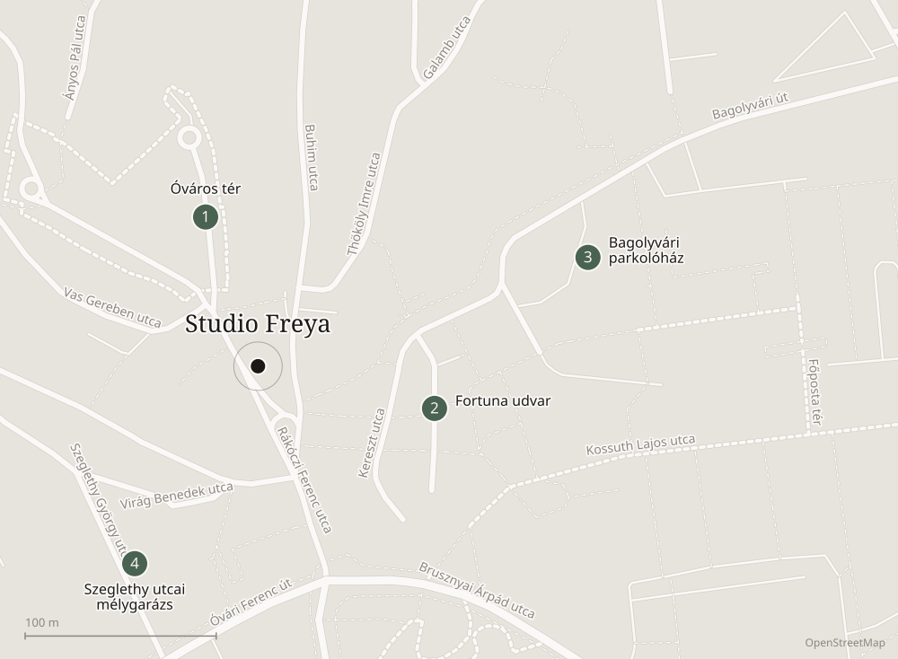
Díj: 480 Ft/óra (piros zóna).
Fizetős: hétköznap 7:00–17:00, hétvégén és ünnepnap ingyenes.
A helyek száma korlátozott.
Díj: 200 Ft/megkezdett fél óra, az első 10 perc ingyenes.
Fizetős: éjjel-nappal, hétvégén és ünnepnap is.
Sorompós, 0–24 órában nyitva.
Díj: 200 Ft/megkezdett fél óra.
Fizetős: éjjel-nappal, hétvégén és ünnepnap is.
0–24 órában nyitva.
A parkolóházak hétvégén is díjkötelesek, a közterületi parkolás viszont szombaton, vasárnap és ünnepnapokon ingyenes. Az aktuális díjakat és zónahatárokat a VKSZ Zrt. oldalán ellenőrizheted.
Kérdésed van vagy egyedi projektet tervezel?
Céges vagy egyedi projekthez egyedi ajánlatot készítünk, kérlek, keress meg külön e-mailben vagy telefonon – szívesen segítünk.